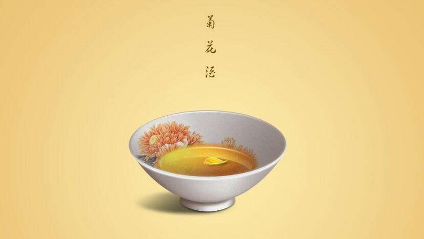

重阳节是最好的赏秋时期，中国南方还有些山区村落保留了“晒秋”特色。去乡村赏民俗、看晒秋，已成为乡村旅游的一种时尚。“晒秋”是一种典型的农俗现象，具有极强的地域特色。
重阳节首先有登高的习俗。金秋九月，天高气爽，这个季节登高远望可达到心旷神怡、健身祛病的目的。
早在西汉，《长安志》中就有汉代京城九月九日时人们游玩观景之记载。在东晋时，有著名的“龙山落帽”故事。

据史料记载，重阳糕又称花糕、菊糕、五色糕，制无定法，较为随意。
九月九日天明时，以片糕搭儿女头额，口中念念有词，祝愿子女百事俱高，乃古人九月作糕的本意。讲究的重阳糕要作成九层，像座宝塔，上面还作成两只小羊，以符合重阳（羊）之义。有的还在重阳糕上插一小红纸旗，并点蜡烛灯。
重阳日，历来就有赏菊花的风俗，所以古来又称菊花节。农历九月俗称菊月，节日举办菊花大会，倾城的人潮赴会赏菊。从三国魏晋以来，重阳聚会饮酒、赏菊赋诗已成时尚。在中国古俗中，菊花象征长寿。

菊花含有养生成分，晋代葛洪《抱朴子》有南阳山中人家饮用遍生菊花的甘谷水而益寿的记载。重阳佳节饮菊花酒，是中国的传统习俗。菊花酒，在古代被看作是重阳必饮、祛灾祈福的“吉祥酒”。
古代还风行九九插茱萸的习俗，所以又叫做茱萸节。茱萸入药，可制酒养身祛病。插茱萸和簪菊花在唐代就已经很普遍。茱萸香味浓，有驱虫去湿、逐风邪的作用，并能消积食，治寒热。民间认为九月初九也是逢凶之日，多灾多难，所以在重阳节人们喜欢佩带茱萸以辟邪求吉。茱萸因此还被人们称为“辟邪翁”。